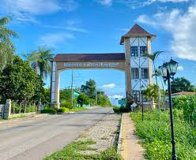

Sobre Martins
Martins é localizada na região serrana do estado, a aproximadamente 300 metros de altitude. Seu clima agradável é uma das maiores atrações para os turistas, especialmente no verão, quando as temperaturas amenas proporcionam um alívio do calor intenso das cidades litorâneas. O município é repleto de paisagens naturais, como a famosa Serra de Martins, que oferece uma vista panorâmica única da região.
Além da beleza natural, Martins também preserva uma rica cultura local, com tradições que encantam os visitantes, desde o museu histórico até o artesanato feito à mão. A cidade também é conhecida pela hospitalidade dos seus habitantes, que recebem os turistas de braços abertos, proporcionando uma experiência acolhedora, com hoteis impressionantes para passar o tempo e aproveitar ainda mais o tempo na cidade.